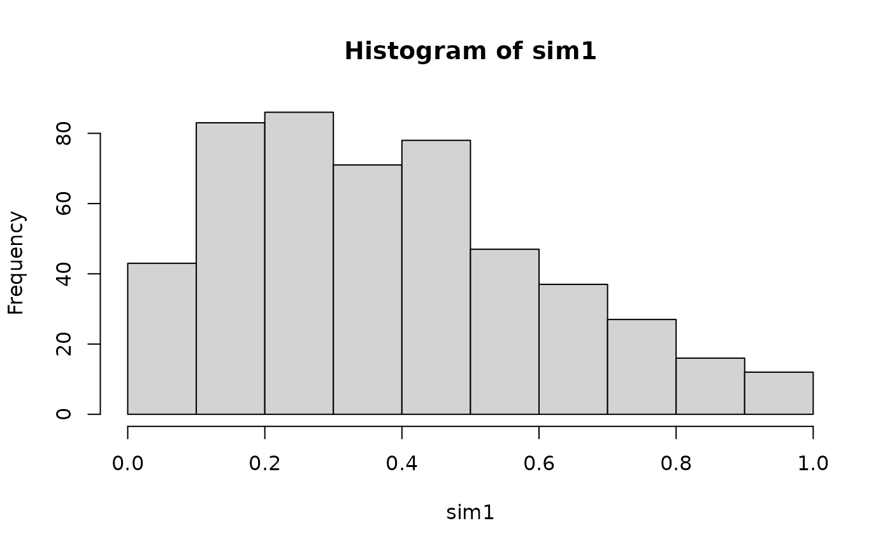
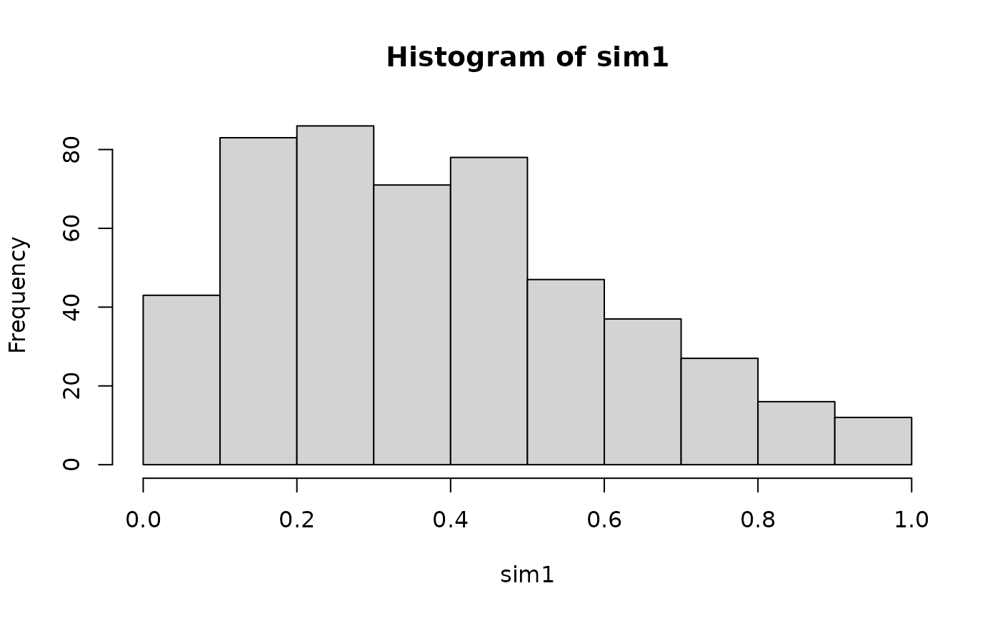

This function simulates from a parametric bivariate copula, where on of the variables is fixed. I.e., we simulate either from \(C_{2|1}(u_2|u_1;\theta)\) or \(C_{1|2}(u_1|u_2;\theta)\), which are both conditional distribution functions of one variable given another.
BiCopCondSim(
N,
cond.val,
cond.var,
family,
par,
par2 = 0,
obj = NULL,
check.pars = TRUE
)Arguments
- N
Number of observations simulated.
- cond.val
numeric vector of length
Ncontaining the values to condition on.- cond.var
either
1or2; the variable to condition on.- family
integer; single number or vector of size
N; defines the bivariate copula family:0= independence copula1= Gaussian copula2= Student t copula (t-copula)3= Clayton copula4= Gumbel copula5= Frank copula6= Joe copula7= BB1 copula8= BB6 copula9= BB7 copula10= BB8 copula13= rotated Clayton copula (180 degrees;survival Clayton'') \cr `14` = rotated Gumbel copula (180 degrees;survival Gumbel”)16= rotated Joe copula (180 degrees;survival Joe'') \cr `17` = rotated BB1 copula (180 degrees;survival BB1”)18= rotated BB6 copula (180 degrees;survival BB6'')\cr `19` = rotated BB7 copula (180 degrees;survival BB7”)20= rotated BB8 copula (180 degrees; “survival BB8”)23= rotated Clayton copula (90 degrees)
`24` = rotated Gumbel copula (90 degrees)
`26` = rotated Joe copula (90 degrees)
`27` = rotated BB1 copula (90 degrees)
`28` = rotated BB6 copula (90 degrees)
`29` = rotated BB7 copula (90 degrees)
`30` = rotated BB8 copula (90 degrees)
`33` = rotated Clayton copula (270 degrees)
`34` = rotated Gumbel copula (270 degrees)
`36` = rotated Joe copula (270 degrees)
`37` = rotated BB1 copula (270 degrees)
`38` = rotated BB6 copula (270 degrees)
`39` = rotated BB7 copula (270 degrees)
`40` = rotated BB8 copula (270 degrees)
`104` = Tawn type 1 copula
`114` = rotated Tawn type 1 copula (180 degrees)
`124` = rotated Tawn type 1 copula (90 degrees)
`134` = rotated Tawn type 1 copula (270 degrees)
`204` = Tawn type 2 copula
`214` = rotated Tawn type 2 copula (180 degrees)
`224` = rotated Tawn type 2 copula (90 degrees)
`234` = rotated Tawn type 2 copula (270 degrees)- par
numeric; single number or vector of size
N; copula parameter.- par2
numeric; single number or vector of size
N; second parameter for bivariate copulas with two parameters (t, BB1, BB6, BB7, BB8, Tawn type 1 and type 2; default:par2 = 0).par2should be a positive integer for the Students's t copulafamily = 2.- obj
BiCopobject containing the family and parameter specification.- check.pars
logical; default is
TRUE; ifFALSE, checks for family/parameter-consistency are omitted (should only be used with care).
Value
A length N vector of simulated from conditional distributions
related to bivariate copula with family and parameter(s) par,
par2.
Details
If the family and parameter specification is stored in a BiCop()
object obj, the alternative version
BiCopCondSim(N, cond.val, cond.var, obj)can be used.
See also
Examples
# create bivariate t-copula
obj <- BiCop(family = 2, par = -0.7, par2 = 4)
# simulate 500 observations of (U1, U2)
sim <- BiCopSim(500, obj)
hist(sim[, 1]) # data have uniform distribution
hist(sim[, 2]) # data have uniform distribution
 # simulate 500 observations of (U2 | U1 = 0.7)
sim1 <- BiCopCondSim(500, cond.val = 0.7, cond.var = 1, obj)
hist(sim1) # not uniform!

# simulate 500 observations of (U1 | U2 = 0.1)
sim2 <- BiCopCondSim(500, cond.val = 0.1, cond.var = 2, obj)
hist(sim2) # not uniform!
# simulate 500 observations of (U2 | U1 = 0.7)
sim1 <- BiCopCondSim(500, cond.val = 0.7, cond.var = 1, obj)
hist(sim1) # not uniform!

# simulate 500 observations of (U1 | U2 = 0.1)
sim2 <- BiCopCondSim(500, cond.val = 0.1, cond.var = 2, obj)
hist(sim2) # not uniform!